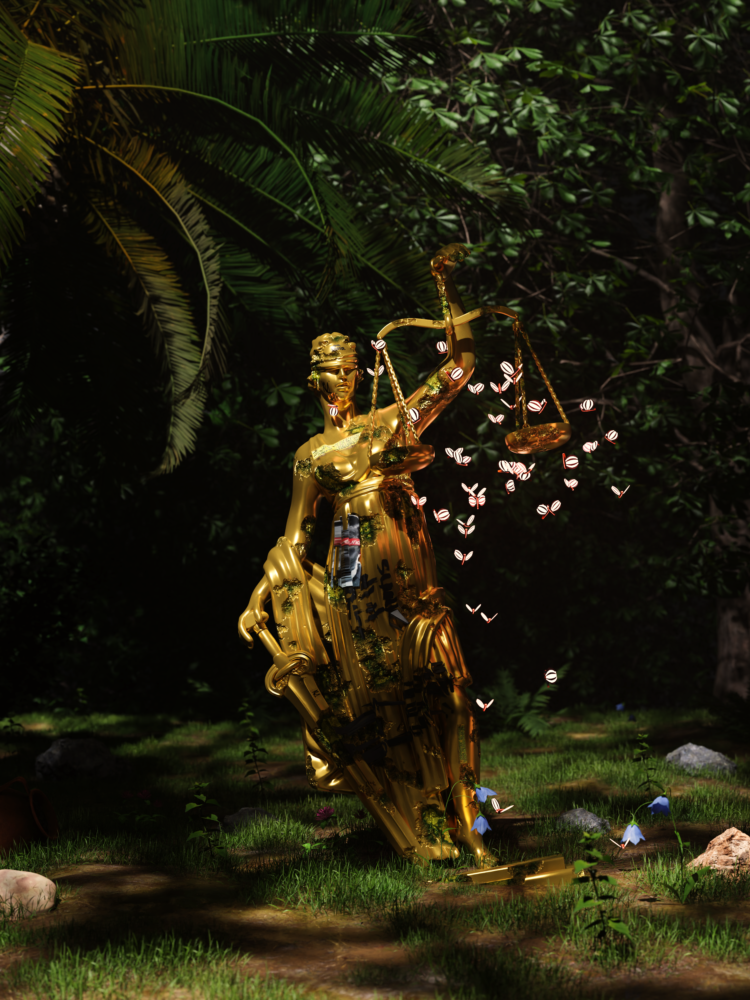

MFI
Farhan's Portofolio
Creative Person
Home
About Me
Video Editing
3D Animation
Photography
Open for work
About Me
01
Video Editing
01
3D Animation
03
Photography
04
Contact
→
3D
Animation

3D
Animation
Tools
Main Tool
3D Animation
Justice is Dead
01
is justice still exist?
The Qorydon
02
ACAB
Help Me
03
please, help me!
Sadness dimensions
04
PPKM
05
when lockdown hold you from the money
Moonwalk
06
literally moonwalk
Ghostface
07
Left for Dead
08
Who Am I?
09
The Burden of Life
10
 Main ToolMain Tool
Main ToolMain Tool